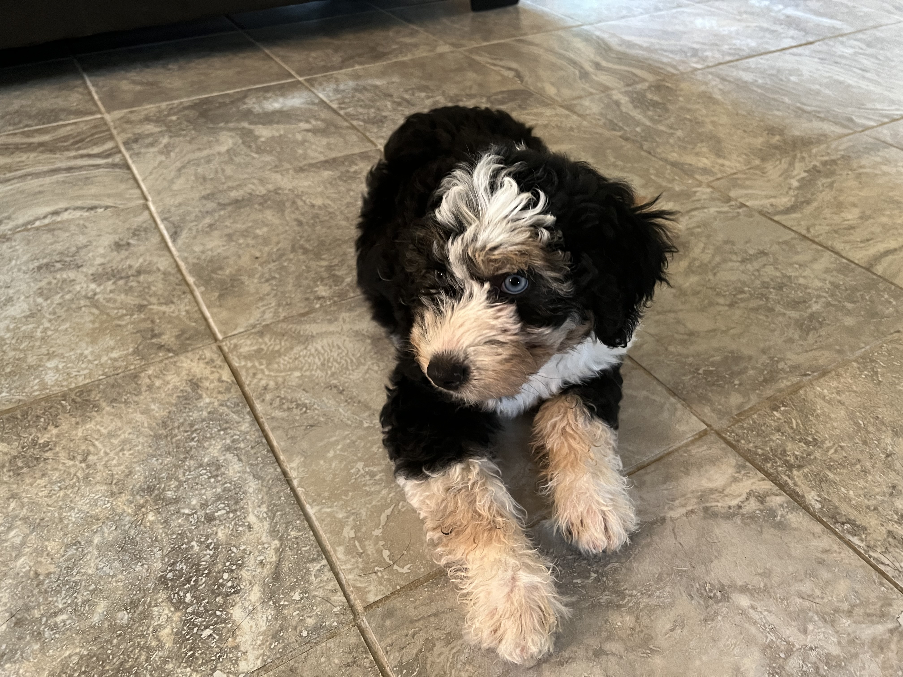
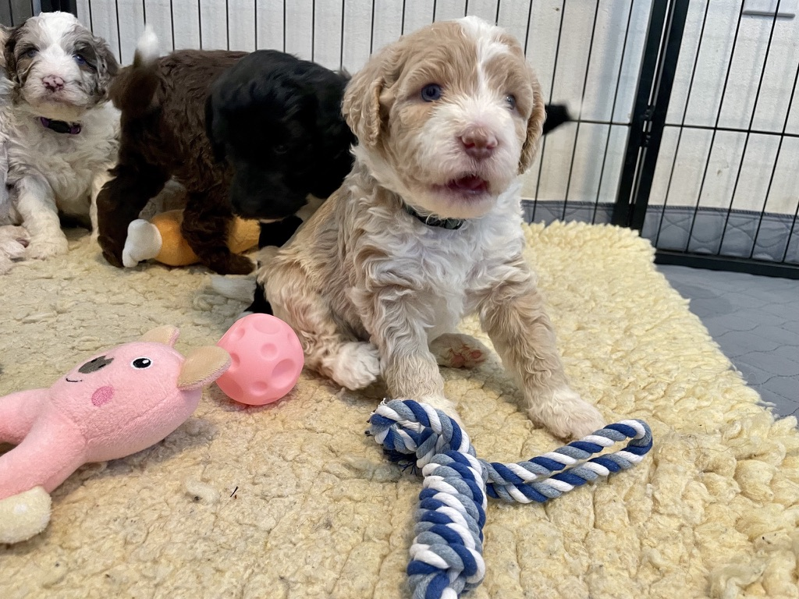
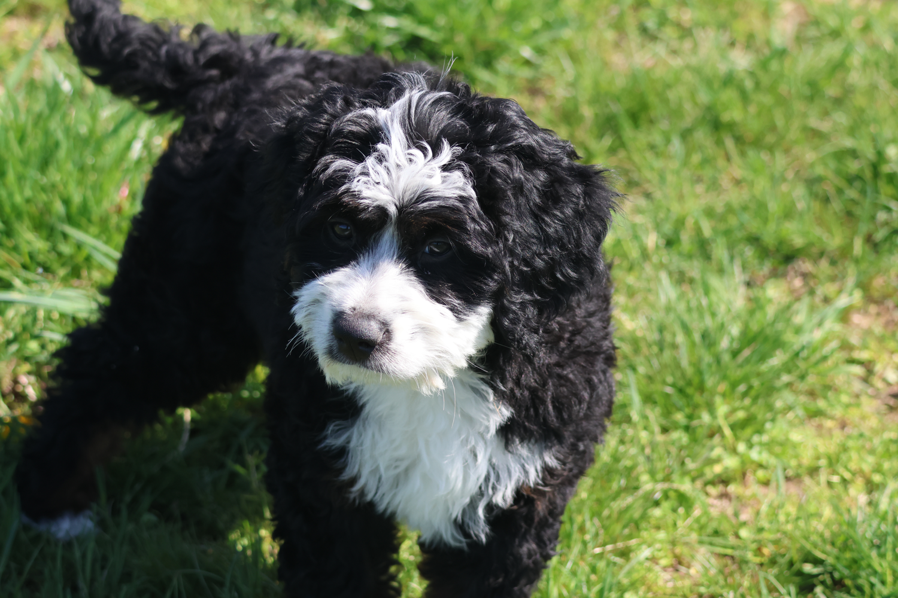
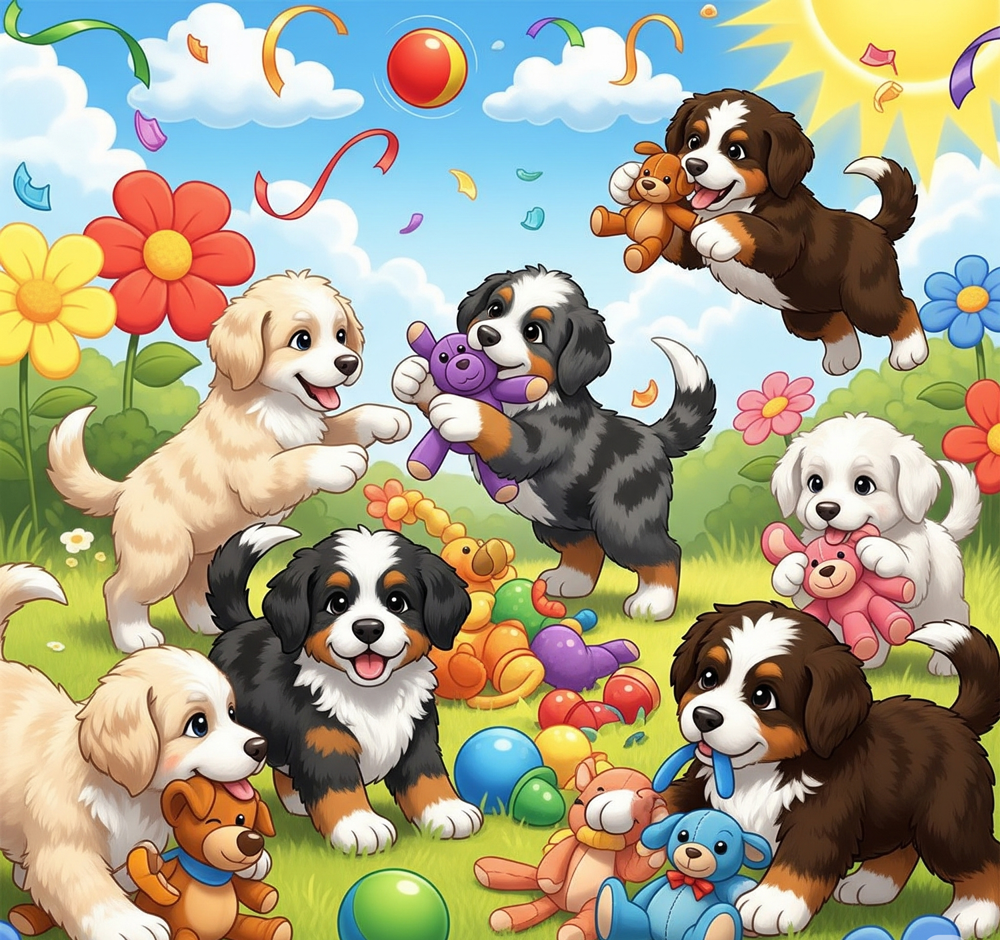
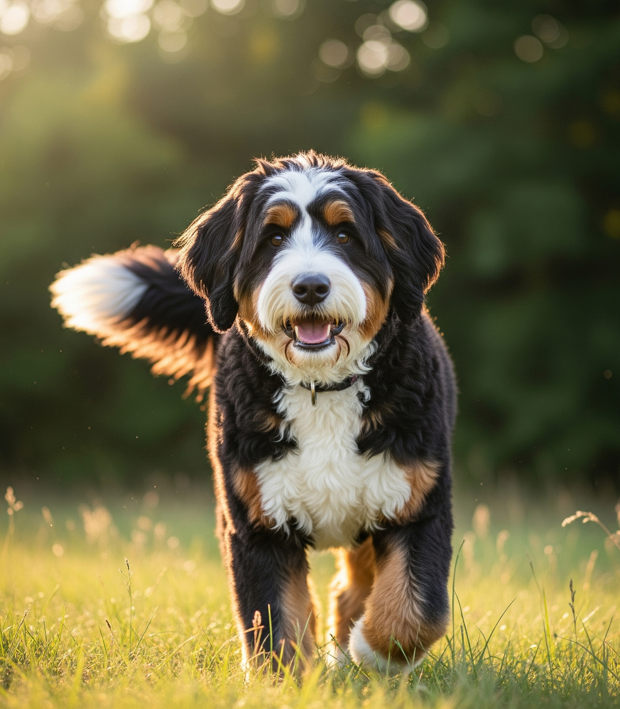
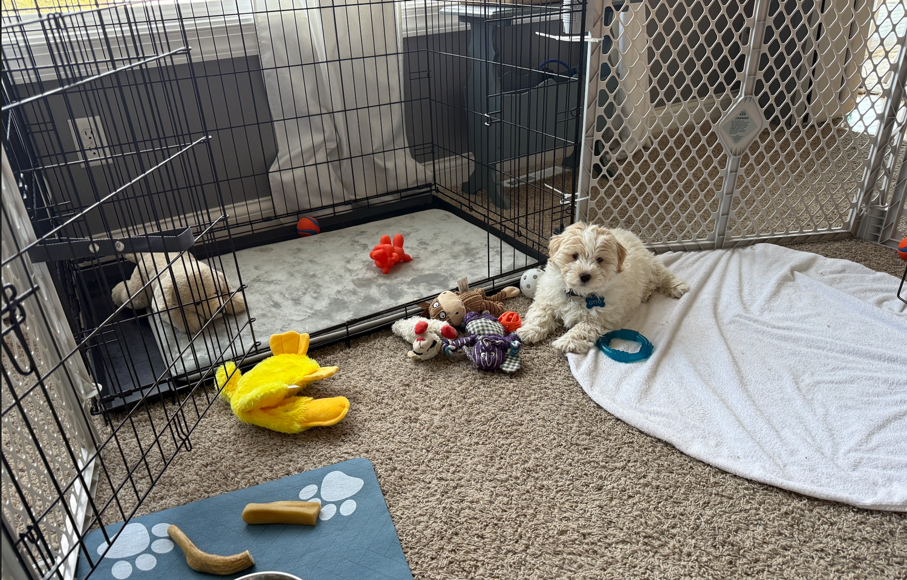

Bernedoodle Puppies
Welcome to the Wonderful World of Bernedoodles!Are you looking for a loyal, intelligent, and affectionate companion to join your family? Look no further than the delightful Bernedoodle! These amazing dogs combine the best traits of two beloved purebreds: the calm and majestic Bernese Mountain Dog and the highly intelligent and adaptable Poodle. The result is a truly special dog that brings joy, laughter, and endless snuggles into any home.

Depending on the size of the parents, Bernedoodles can range in size from tiny companions to large, cuddly giants. Their coats are typically wavy or curly and come in a variety of colors, often showcasing the beautiful tri-color markings of the Bernese. One of their most sought-after traits is their low-shedding coat, making them a more manageable option for many families.

They are known for their friendly, playful personalities and are often described as great family dogs. Bernedoodles come in various sizes, including standard, mini, and tiny, and can have different coat colors and types.

Whether as a family pet or a therapy animal, Bernedoodles inherit a wonderful blend of characteristics from their parent breeds, making them exceptional family dogs or therapy dogs. Here are just a few of the advantages of bringing a Bernedoodle into your home:
1. Incredible Temperament: Bernedoodles are renowned for their gentle, good-natured, and easygoing personalities. They are typically very patient with children, making them ideal companions for families with kids of all ages. Their Bernese heritage contributes to their calm demeanor, while the Poodle influence adds a playful spark.
2. Highly Intelligent and Trainable: Thanks to the Poodle's exceptional intelligence, Bernedoodles are quick learners and eager to please. This makes them highly trainable, whether you're working on basic obedience, advanced tricks, or even agility. Early socialization and consistent positive reinforcement training will help them blossom into well-behaved family members.
3. Hypoallergenic Potential: For families concerned about allergies, Bernedoodles offers a significant advantage. Even pure poodles occasionally shed, the Poodle's genes result in a minimal shedding coat that produces less dander, which is the primary cause of pet allergies. This makes them a more great choice for families with allergies.
4. Loyal and Affectionate Companions: Bernedoodles thrive on human companionship and are incredibly devoted to their families. They love to be involved in family activities, whether it's a walk in the park, a game of fetch in the backyard, or simply cuddling up on the couch for a movie night. Their affectionate nature makes them wonderful snuggle buddies and emotional support animals.
5. Adaptable to Various Lifestyles: While they love to play and enjoy outdoor adventures, Bernedoodles are also content to relax with their families. They can adapt well to various living situations, from homes with large yards, farms and even apartments, as long as they receive adequate exercise and mental stimulation.
6. Beautiful and Unique Appearance: With their charming "teddy bear" looks and diverse coat colors, Bernedoodles are undeniably adorable. Each Bernedoodle has a unique appearance, adding to their individual charm and making them stand out in a crowd.

Is a Bernedoodle Right for Your Family?

If you're looking for a loving, intelligent, and adaptable dog with a wonderful temperament and the ability to snuggle and not walk away with as much hair on you as the dog, a Bernedoodle could be the perfect addition to your family. While they do require regular grooming to keep their coats healthy and tangle-free, the rewards of having a Bernedoodle by your side far outweigh the effort.
Apply to become part of our Doodle Dandy Family and discover how a Bernedoodle can bring endless joy and companionship to your home! Once you have submitted your application we are happy to text, call or video call with the puppies.
Apply Here